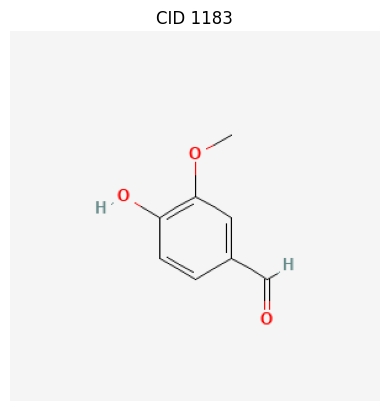

Basic Usage
This guide covers the fundamental features of the ChemInformant library, designed to help users quickly get started with common chemical information query tasks.
Core Functionality: Bulk Fetching of Multiple Properties
The most central feature of ChemInformant is get_properties(). This function is designed for batch processing, allowing users to query multiple chemical properties for a group of compounds in a single call. This approach is significantly more efficient than querying each compound individually in a loop because it effectively consolidates network requests.
The function accepts a list of various identifiers (such as common names, PubChem CIDs, or SMILES strings) and returns a structured Pandas DataFrame with standardized snake_case column names, ready for direct use in subsequent data analysis.
Note
Snake_case Property Names: ChemInformant uses consistent snake_case naming (e.g., molecular_weight, h_bond_donor_count) for all returned data. Both snake_case and CamelCase inputs are accepted, but output is always standardized.
import ChemInformant as ci
import pandas as pd
# 1. Define a list containing different types of identifiers
# (Aspirin, Caffeine, Acetaminophen)
identifiers = ['aspirin', 'caffeine', 1983]
# 2. Specify the properties you want to fetch (using snake_case names)
properties_to_fetch = ['molecular_weight', 'xlogp', 'cas', 'iupac_name']
# 3. Call the core function to perform the query
data_frame = ci.get_properties(identifiers, properties_to_fetch)
# 4. View the resulting DataFrame
print(data_frame.to_string())
Output:
input_identifier cid status molecular_weight xlogp cas iupac_name
------------------ ----- ------ ---------------- ----- ------- ---------------------------------
aspirin 2244.0 OK 180.16 1.20 50-78-2 2-(acetyloxy)benzoic acid
caffeine 2519.0 OK 194.19 -0.07 58-08-2 1,3,7-trimethylpurine-2,6-dione
1983 1983.0 OK 151.16 0.51 103-90-2 N-(4-hydroxyphenyl)acetamide
Getting All Properties or Including 3D Descriptors
ChemInformant offers convenient options to retrieve comprehensive data sets:
# Get all ~40 available properties for a compound
complete_data = ci.get_properties(['aspirin'], all_properties=True)
print(f"Retrieved {len(complete_data.columns)} columns of data")
# Get core properties plus 3D molecular descriptors
data_with_3d = ci.get_properties(['aspirin'], include_3d=True)
# Both approaches are much more efficient than multiple API calls
The all_properties=True option retrieves every available property from PubChem, including core properties, 3D descriptors, and special properties like CAS numbers and synonyms. The include_3d=True option adds 3D molecular descriptors to the default core property set.
Getting Complete Information for a Single Compound
When you need to retrieve all available information for a single compound, use the get_compound() function. It returns a Compound data object, which neatly encapsulates all properties. Specific information can be conveniently accessed via attribute access (dot notation).
import ChemInformant as ci
# Get complete information for caffeine using its name
caffeine = ci.get_compound('caffeine')
# Access the object's various attributes using dot notation
if caffeine:
print(f"Query Identifier: {caffeine.input_identifier}")
print(f"PubChem CID: {caffeine.cid}")
print(f"IUPAC Name: {caffeine.iupac_name}")
print(f"Molecular Formula: {caffeine.molecular_formula}")
print(f"Molecular Weight: {caffeine.molecular_weight}")
# The object also contains automatically calculated properties, such as the PubChem link
print(f"PubChem Link: {caffeine.pubchem_url}")
Output:
Query Identifier: caffeine
PubChem CID: 2519
IUPAC Name: 1,3,7-trimethylpurine-2,6-dione
Molecular Formula: C8H10N4O2
Molecular Weight: 194.19
PubChem Link: https://pubchem.ncbi.nlm.nih.gov/compound/2519
Convenient Shortcut Functions
To simplify queries for a single property, ChemInformant provides a series of shortcut functions, such as get_weight() and get_cas(). These functions are lightweight wrappers around get_properties(), making the code more concise when only a single data point is needed.
import ChemInformant as ci
# Get the molecular weight of aspirin
aspirin_weight = ci.get_weight('aspirin')
print(f"Molecular weight of aspirin: {aspirin_weight}")
# Get the CAS number for water
water_cas = ci.get_cas('water')
print(f"CAS number for water: {water_cas}")
# Get the molecular formula for ethanol (using a SMILES identifier)
ethanol_formula = ci.get_formula('CCO')
print(f"Molecular formula of ethanol: {ethanol_formula}")
Output:
Molecular weight of aspirin: 180.16
CAS number for water: 7732-18-5
Molecular formula of ethanol: C2H6O
ChemInformant provides 22 convenience functions for individual properties, covering molecular descriptors, structural features, mass properties, and identifiers. All functions return None for compounds that cannot be found, making error handling straightforward.
Visualizing Compound Structures
The library also provides the draw_compound() function for drawing 2D structural diagrams of compounds. This feature requires the installation of an optional plotting dependency.
The function calls PubChem’s imaging service and uses Matplotlib to display it.
import ChemInformant as ci
# Draw the structure of Vanillin
# After executing the code, a new window will pop up to display the image
ci.draw_compound('Vanillin')
When executed, an image window containing the chemical structure of Vanillin will be displayed.
{kind=link}
